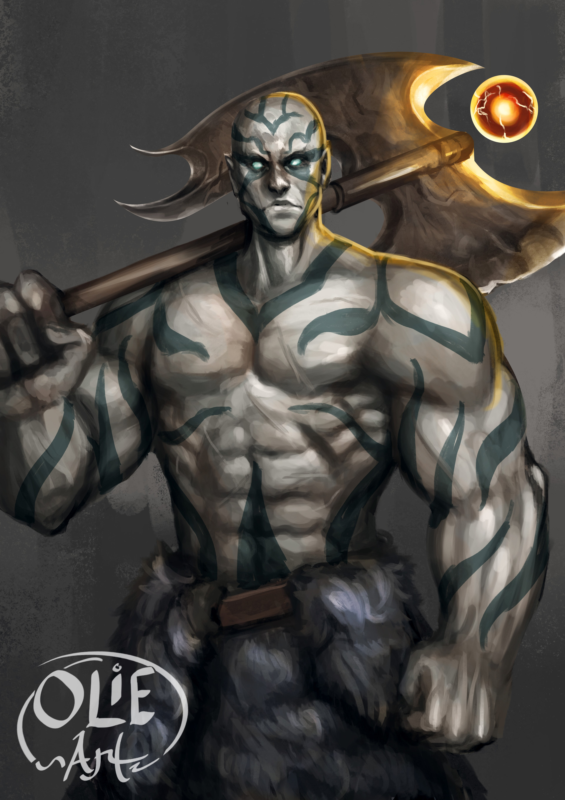

Thaghana 'Coup de maître' Tsointsoin
Personnage¶
Race : Goliath
Classe : Barbare
Niveau : 1 (BM +2)
Points de vie : 15
Vitesse : 30 ft.
| FOR | DEX | CON | INT | SAG | CHA |
|---|---|---|---|---|---|
| 18 (+4) | 12 (+1) | 16 (+3) | 16 (+3) | 8 (-1) | 10 (±0) |
| ◉ +6 | ◎ +1 | ◉ +5 | ◎ +3 | ◎ -1 | ◎ ±0 |
| Compétences | |
|---|---|
| ◎ Acrobaties (Dex) : +1 | ◎ Investigation (Int) : +3 |
| ◎ Arcanes (Int) : +3 | ◉ Médecine (Sag) : +1 |
| ◉ Athlétisme (For) : +6 | ◉ Nature (Int) : +5 |
| ◎ Discrétion (Dex) : +1 | ◉ Perception (Sag) : +1 |
| ◎ Dressage (Sag) : -1 | ◎ Persuasion (Cha) : ±0 |
| ◎ Escamotage (Dex) : +1 | ◉ Religion (Int) : +5 |
| ◎ Histoire (Int) : +3 | ◎ Représentation (Cha) : ±0 |
| ◎ Intimidation (Cha) : ±0 | ◎ Survie (Sag) : -1 |
| ◎ Intuition (Sag) : -1 | ◎ Tromperie (Cha) : ±0 |
Fiche récapitulative pour ceux qui ont la flemme (Merci Gemini !)
Vous êtes Thaghana, un goliath à la force colossale et à l'intelligence de génie, banni de son clan primitif pour avoir appris à lire, et qui tente maintenant de prouver au monde (souvent avec une frustration explosive) que la stratégie est aussi puissante qu'une hache bien aiguisée.
Objectif pour la session :
Votre curiosité est sans fin. Votre but est d'observer, d'analyser et de tester vos théories tactiques dans des situations réelles. Chaque combat est une expérience, chaque conversation une occasion de partager (ou d'imposer) votre savoir. Secrètement, chaque succès est une pierre ajoutée à l'édifice qui, espérez-vous, prouvera un jour à votre clan qu'ils avaient tort.
Le Professeur Frustré : Vous êtes un génie passionné entouré d'élèves lents. Expliquez vos plans brillants avec un enthousiasme débordant, en utilisant des mots compliqués tirés de votre livre. Quand on ne vous comprend pas, devenez visiblement frustré (soupirs, grands gestes, simplifications extrêmes comme "ON MONTE, EUX DESCENDENT, ON GAGNE !").
La Rage n'est pas Aveugle, elle est Exaspérée : Votre rage n'est pas une fureur bestiale, c'est une crise de nerfs tactique. En combat, hurlez des corrections et des ordres à vos ennemis comme à vos alliés. "PAS COMME ÇA, IMBÉCILE ! LE FLANC !". Vous êtes en colère parce que les gens se battent de manière inefficace.
Le Livre est la Vérité : Votre livre de stratégies est votre bible. Brandissez-le pour prouver ce que vous avancez. Posez votre main dessus comme pour vous rassurer. C'est la source de votre force intellectuelle et la cause de votre exil ; il est l'objet le plus important de votre vie.
Maîtrises¶
Armure : Armures Simples, Armures Moyennes, Boucliers
Armes : Armes Simples, Armes Martiales
Outils : Kit d'Herboriste
Langues : Commun, Géant, Elfique
Description¶
Âge : 26 ans
Taille : 2,34 m
Poids : 163 kg
La stature de Thaghana n'est pas simplement imposante, elle est une déclaration. Autrefois peut-être une simple réalité de sa lignée, sa musculature massive et presque disproportionnée est aujourd'hui une réalité qu'il porte avec une fierté nouvelle, se tenant parfaitement droit telle une montagne de chair et de volonté.
Son visage est une forteresse, aussi fermé et impénétrable que les pics de ses montagnes natales. Son regard ne trahit aucune émotion superflue ; ses yeux d'un bleu glacial ne crient pas la rage, ils analysent, jugent et dissèquent le monde avec une sévérité froide.
Sa peau grise est une toile racontant une histoire d'incomplétude. Sur son torse et ses bras, les "veines" noires de son tatouage clanique s'arrêtent brusquement, des lignes brisées qui ne se rejoignent jamais, rappel permanent et visible de son bannissement. Son crâne, entièrement chauve, arbore un autre tatouage, une marque complexe et personnelle, celle de l'identité qu'il se forge loin des siens.
Dénué d'armure, son torse nu ne craint ni le froid ni les coups, protégé par une peau tannée et une constitution de roc. Une simple fourrure épaisse lui sert de ceinture, retenant un pantalon brut. À cette ceinture primitive sont accrochés les deux pôles de son existence : d'un côté, le pommeau d'une hache à deux mains si démesurée qu'elle semble taillée pour un géant ; de l'autre, bien à l'abri dans une sacoche de cuir usé, le livre qui a causé sa chute et orchestré sa renaissance.

Aptitudes¶
Aptitudes de Race¶
Petit Géant. Vous êtes considéré comme d'une taille supérieure pour déterminer votre capacité de portage ainsi que le poids que vous pouvez pousser, tirer ou soulever.
Né des Montagnes. Vous êtes résistants aux dégâts de froid. Vous vous acclimatez naturellement aux hautes altitudes, même si vous n'y avez jamais été. Cela correspond à des élévations de plus de 6 000 m.
Endurance de Pierre. Vous pouvez tirer parti du pouvoir de la pierre pour ignorer des dégâts. Lorsque vous prenez des dégâts, vous pouvez utiliser votre réaction pour lancer un d12. Ajoutez votre modificateur de Constitution au résultat obtenu et réduisez les dégâts de ce total.
Vous pouvez utiliser ce trait un nombre de fois égal à votre bonus de maîtrise, et vous regagnez toutes les utilisations dépensées lorsque vous terminez un repos long.
Aptitudes de Classe¶
Rage¶
Vous savez vous battre en faisant appel à votre férocité primaire. Pendant votre tour, vous pouvez vous enrager pour une action bonus.
Tant que vous êtes enragé, vous bénéficiez des effets suivants si vous ne portez pas d'armure lourde :
- Vous avez l'avantage aux jets et jets de sauvegarde de Force.
- Lorsque vous réalisez une attaque armée de mêlée en utilisant la Force, vous gagnez un bonus aux dégâts en fonction de votre niveau de barbare, tel que renseigné dans la table.
- Vous êtes résistant aux dégâts contondants, perçants et tranchants.
Si vous êtes capable de lancer des sorts, vous ne pouvez ni incanter ni vous concentrer pendant une rage.
Votre rage dure 1 minute. Elle termine prématurément si vous êtes inconscient ou si votre tour se termine sans que vous ayez attaqué une créature hostile ou pris de dégâts depuis votre dernier tour. Vous pouvez aussi choisir de terminer votre rage pour une action bonus.
Une fois que vous vous êtes enragé autant de fois que renseigné dans la table, vous devez terminer un repos long avant de pouvoir le faire à nouveau.
Défense Sans Armure¶
Tant que vous ne portez aucune armure, votre CA est égale à 10 + votre modificateur de Dextérité + votre modificateur de Constitution. Vous pouvez utiliser un bouclier et profiter de cet effet.
Équipement¶
- Une hache à deux mains
- Deux hachette
- Quatre javelines
- Un sac d'explorateur
- Un livre ancien sur les stratégies de guerre et de duel
- Une couette de fourrure
- Un kit d'herboriste
- 5 Pièces d'Or
Historique¶
Au sein du clan du Pic Inflexible, Thaghana était un jeune goliath comme les autres : fort, compétitif et respectueux des traditions. Il excellait dans les épreuves de force, de lancer de rocher et de chasse. On attendait de lui qu'il devienne un pilier du clan, un chasseur ou un gardien exemplaire.
Et, lors d'une expédition de chasse en solitaire dans une vallée reculée, une avalanche révèle l'entrée d'une ruine ancienne, peut-être un avant-poste d'un empire déchu. À l'intérieur, parmi les squelettes et les armes rouillées, Thaghana trouve un objet qu'il n'a jamais vu : un livre, miraculeusement préservé dans un coffret de cuir. Il s'agit d'un traité de tactique militaire et d'histoire, "Les Stratégies de la Victoire" par un général oublié.
Fasciné par les symboles étranges, Thaghana emporte le livre. Nuit après nuit, à la lueur d'un feu de camp isolé, il lutte pour déchiffrer les runes. Lentement, péniblement, seul, il apprend à lire. Les mots deviennent des idées, les idées deviennent des stratégies. Il découvre le concept de la guerre non pas comme une explosion de force brute, mais comme un jeu d'échecs mortel. Il apprend l'histoire, la géographie, les faiblesses des différentes créatures, non pas par tradition orale, mais par analyse écrite.
Sa nouvelle connaissance change sa façon de voir le monde. Lors d'une compétition de clan, au lieu de foncer tête baissée, il utilise une feinte et la topographie du terrain pour vaincre un adversaire beaucoup plus massif. Sa victoire est d'abord accueillie par une acclamation de la foule, qui scande son désormais surnom : "Coup de Maître !". Puis, vint le silence, et la suspicion. Pour son clan, la force doit être directe, honnête. La ruse est la marque des faibles et des petites gens.
Le chaman du clan, le seul à connaître les pratiques extérieures, le confronte. Il découvre le livre, qu'il déclare être un artefact de "magie faible" qui "vole la force de l'âme pour la mettre dans des marques lâches". Apprendre à lire était une trahison des traditions goliaths. On lui donne un choix : brûler le livre et oublier ce "poison mental", ou être banni.
Thaghana regarde le livre, puis les visages fermés de son clan. Il comprend qu'il ne peut pas désapprendre ce qu'il a appris. Il ne peut pas redevenir celui qu'il était. Serrant son livre contre lui, il est déclaré Skannak - "le Banni" - et chassé des montagnes, son nom effacé des sagas du clan.
Aujourd'hui, Thaghana ne s'identifie plus comme Skannak, il a appris à s'accepter, à utiliser ses connaissances pour être meilleur. Chassé de son village, il a dû faire tant bien que mal pour survivre, et suit désormais une voie qui lui permettra d'assouvir ses envies de curiosité : la voie d'aventurier.
Aptitude d'Historique¶
Grâce à son étude approfondie du livre de stratégies, Thaghana est devenu expert dans l'art du combat. Lorsqu'il décide d'utiliser son action pour attaquer, il peut décider de réaliser un jet de Charisme (Représentation) pour feinter son adversaire. La cible doit réussir un jet de sauvegarde de Sagesse contre le jet de Charisme de Thaghana. Thaghana peut utiliser cette aptitude un nombre de fois égal à son bonus de maîtrise, et il regagne toutes les utilisations dépensées lorsqu'il termine un repos long.
Traits de Personnalité¶
Traits : Je travaille sur une grande théorie philosophique et j'adore partager mes idées. Je n'ai aucune idée de l'étiquette et des normes sociales.
Idéal : Les émotions ne doivent pas venir nuire à notre sens de la morale et de la vérité, ou à notre sens logique.
Lien : Je suis rentré en exil par la faute de mon clan, et j'espère secrètement leur montrer que ma façon de faire est la bonne.
Défaut : Je risquerais tout pour satisfaire ma curiosité et obtenir ne serait-ce que la plus petite connaissance.
Alignement : Loyal Neutre
Conseils de jeu¶
Sa voix est toujours un grondement de goliath, mais elle monte en tonalité et s'accélère quand il explique un concept qui le passionne. Il utilise des mots complexes tirés de son livre, puis, se rendant compte que personne ne comprend, il termine sa phrase par un grognement frustré et un geste simple. "La supériorité topographique nous offre un avantage tactique de… Argh ! On se met en haut, ils sont en bas, on tape plus fort !". Il n'attend pas son tour pour parler de ce qu'il sait.
Si un allié suggère un plan, il peut l'interrompre bruyamment, non par impolitesse, mais par pur enthousiasme : "OH ! NON, ATTENDS ! C'est exactement comme dans la 'Manœuvre de la Tenaille Brisée' ! Si tu vas là, et que moi je…". En rage, il hurle sa frustration. Ses cris de guerre sont des corrections tactiques beuglées à pleins poumons : "PAS LA TÊTE, IDIOT, LE GENOU ! IL EST DÉSÉQUILIBRÉ !", "MAIS REGARDEZ-MOI CETTE FORMATION PATHÉTIQUE !"
Le livre est son bien le plus précieux. Quand il essaie de convaincre quelqu'un, il ne se contente pas de l'invoquer, il l'ouvre et le brandit, tapotant frénétiquement une page du doigt comme pour dire "Mais regarde, c'est ÉCRIT LÀ !". (Même si son interlocuteur ne sait pas lire). Quand ses compagnons ne comprennent pas un plan qu'il juge "simple", il a des tics très visibles : il se pince l'arête du nez entre deux doigts énormes, il passe sa main sur son crâne chauve, ou il peut même taper du pied comme un enfant géant.
Quand il comprend soudainement quelque chose ou qu'une idée de génie lui vient, il ne le garde pas pour lui. Il peut se frapper le front avec la paume de sa main, écarquiller les yeux, et laisser échapper un "Haaa ! Mais oui !".